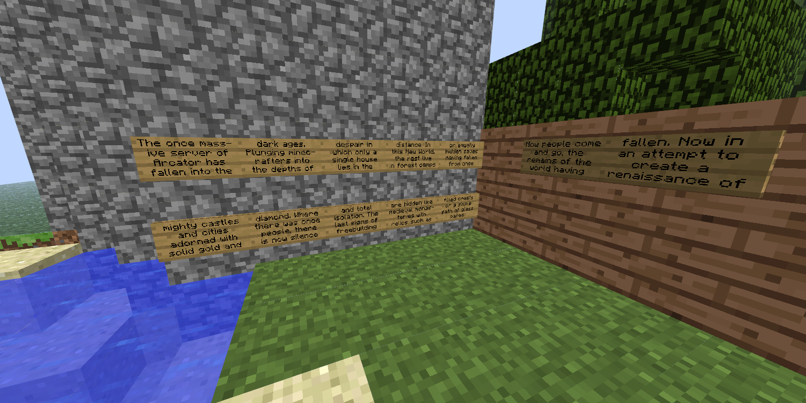
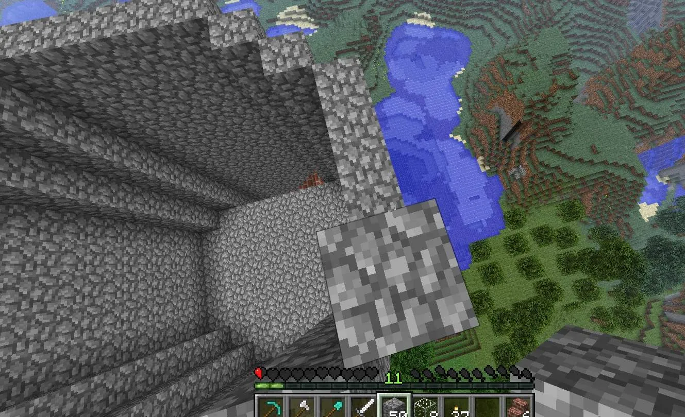
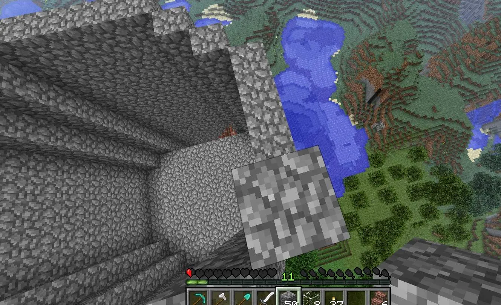

One of the interesting things I find with the story of Arcator is how different 2014 is. If I jumped to 2016 or 2022 factions or smp; it's unique but always full of different people and personalities. There's multiple servers, a discord, and Onfim. But in 2014, none of that is there. The first few stories are weird because of the absence. Before anything else has loaded. So with that said let get in to this book The Land of Ghosts.
it was august 2014, I remembered I had heard of Arcator years ago, a Minecraft server. I finally felt like I wanted to play it, there were people there, they played in creative, built huge builds adorned with solid gold. I was ready to join finally and-I booted up mc Outdated serverhm, I kept trying switching versions a few times until 1.5.2 worked little weird as this version of MC was out dated, but eventually I loaded In, it was not the arcator I expected instead of creative I was just standing in survival by a ring of cobble one block high and a bunch of signs in front of me, so I started typing in chat franticly, "is anyone still here?", "hello", "find me on steam", "I miss you guys" no one was on and I realized I was too late 2 years too late actually Arcator had peaked, risen and died in 2011, 2012 what was I doing in 2014 the story was already over everyone had moved on I, decided to walk around a bit. I told myself “at least to explore”, the spawn really was empty with no signs of life only a cobble stone rig left to rot and decay through the age of time besides the cobble ring by the lake the piles of signs stacked on there was nothing but forest strangely- silent, you see in 1.5.2 animals don't respawn so in the silent forest I knew people used to play long before me they were gone but like ghosts they left an impression the silence was loud even deffening sometimes, but I did see one build perched on a mountain was a house surprisingly well made, I wanted to check it out so I ran there climbing the hill up the stairs and entered the door, Inside this! I felt was civilization inside I found chests and just stone tools hardly any- iron whoever lived here I thought, probably only lasted a couple days before getting bored and leaving, that was the pinncale of civilization, I walked my way back to the spawn and reflected if this is what the middle ages were really like. 
 with a podcast on I started to build and just kept building up one day,
hopefully they would return sometimes I'd try commands
with a podcast on I started to build and just kept building up one day,
hopefully they would return sometimes I'd try commands maybe this would work or just saying "is anyone there in chat" but each time, there was no reply so I settled into a rhythm
maybe this would work or just saying "is anyone there in chat" but each time, there was no reply so I settled into a rhythm each day I would play, I would build a bit more but since there was no one to talk I went to the site instead and read every post. when 2014 and 2013 was done I started reading 2012 and 2011,
kind of lurking in conversations of people that weren't even present in for a long time. It was a bit weird feeling out of time but somehow it pulled me in I became fascinated by the history what happened to this huge server where did all the people go? all I could do was read instead of chat and slowly the story emerged in front of me. Where the first gen staff of 2011 came from, and how thing got to this point slowly got tired in 2012 a last ditch attempt to reset things in 2013 and then the last staff leaving before they could finish the commands whatever world I was in now, wasn't meant to be it was just forgotten half configured but somehow still playable I often made expeditions to look for builds I called them relics sometimes it would be a small base carved into a mountain cliff a few torches in a cave,
a reminder that there were other people before me and each time I thought, how they never lasted it felt almost like a challenge this was my world to explore. 3 days later I saw someone enter the chat from the irc a kind of bridge like discord it was fela one of the first owners he was checking his server and he was surprised to see me someone online I got really excited someone to finally talk to and asked a ton of questions, where did everyone go he said, they had started uni I told him I was going to wait i wanted to see if people join and he said "why play here?" "where are you from" I- paused "uhhh ontario to be generic" he laughed, and said "that's good enough"(yes that's why that's known, from a 2014 conversation)
but yeah he then said "your ping must be higher for a server in the uk" "why don't you play single player?"(and in hindsight I'm really glad I didn't)
each day I would play, I would build a bit more but since there was no one to talk I went to the site instead and read every post. when 2014 and 2013 was done I started reading 2012 and 2011,
kind of lurking in conversations of people that weren't even present in for a long time. It was a bit weird feeling out of time but somehow it pulled me in I became fascinated by the history what happened to this huge server where did all the people go? all I could do was read instead of chat and slowly the story emerged in front of me. Where the first gen staff of 2011 came from, and how thing got to this point slowly got tired in 2012 a last ditch attempt to reset things in 2013 and then the last staff leaving before they could finish the commands whatever world I was in now, wasn't meant to be it was just forgotten half configured but somehow still playable I often made expeditions to look for builds I called them relics sometimes it would be a small base carved into a mountain cliff a few torches in a cave,
a reminder that there were other people before me and each time I thought, how they never lasted it felt almost like a challenge this was my world to explore. 3 days later I saw someone enter the chat from the irc a kind of bridge like discord it was fela one of the first owners he was checking his server and he was surprised to see me someone online I got really excited someone to finally talk to and asked a ton of questions, where did everyone go he said, they had started uni I told him I was going to wait i wanted to see if people join and he said "why play here?" "where are you from" I- paused "uhhh ontario to be generic" he laughed, and said "that's good enough"(yes that's why that's known, from a 2014 conversation)
but yeah he then said "your ping must be higher for a server in the uk" "why don't you play single player?"(and in hindsight I'm really glad I didn't)